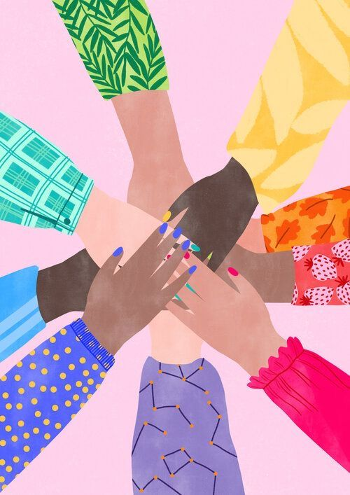
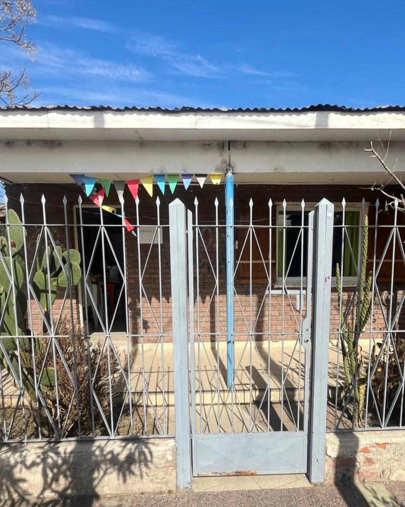
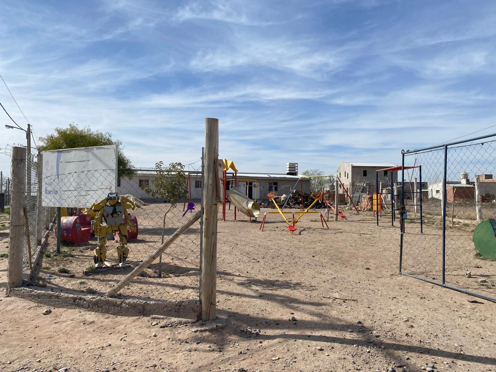
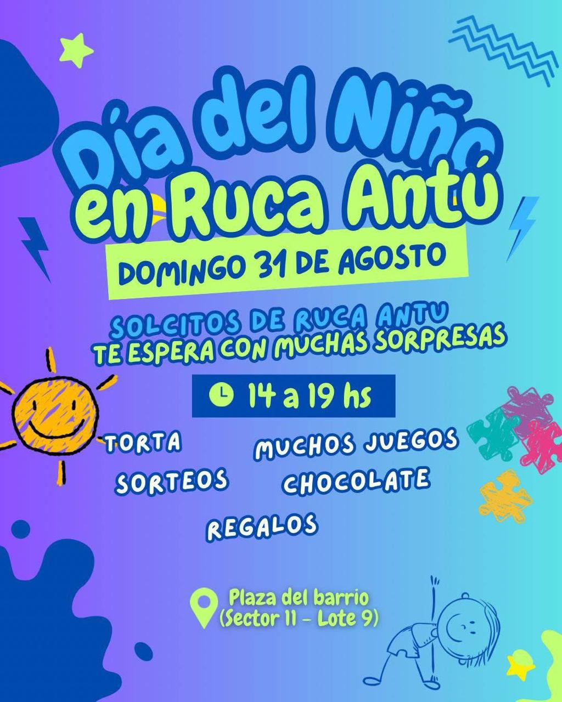
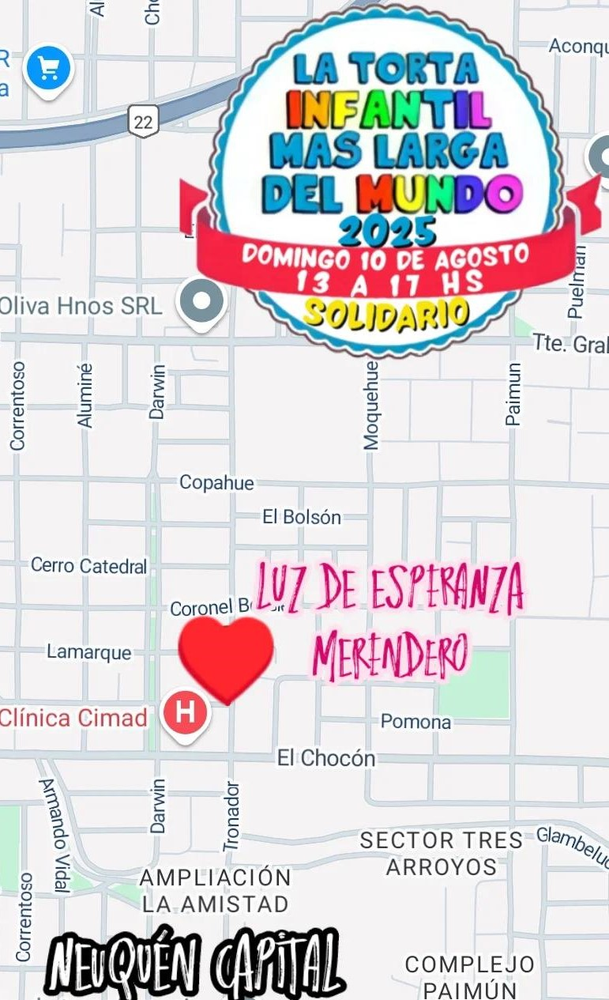
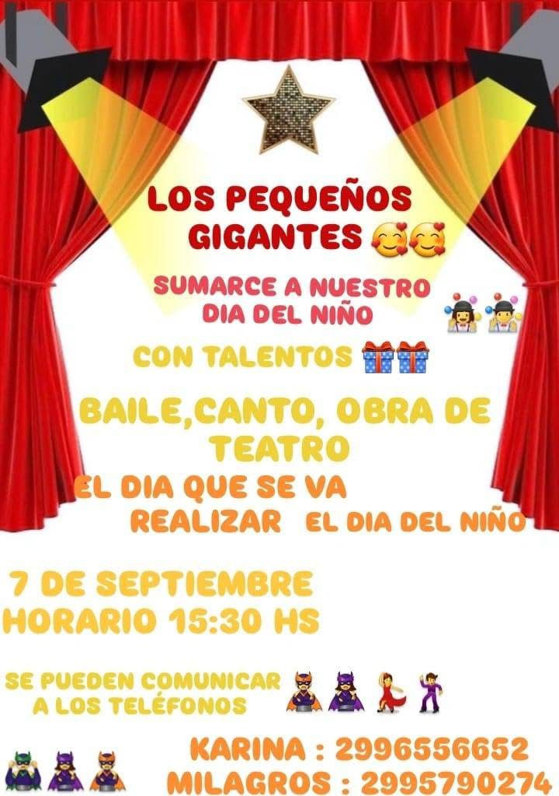

"Un puente entre quienes quieren ayudar y quienes más los necesitan. Descubrí merenderos cerca tuyo, conocé sus historias y sumá tu granito de arena con alimentos, ropa o tiempo. Porque juntos podemos encender más sonrisas."



“Aquí encontraras información sobre eventos, colectas y actividades de nuestros merenderos y comedores. Mantente al día con todo lo que está pasando y descubre nuevas formas de ayudar.”

“Gran festejo del Día del Niño en Ruca Antú con juegos, sorteos, regalos, torta, chocolate y muchas sorpresas para toda la familia, en la plaza del barrio (Sector 11 - Lote 9).”

“El merendero Luz de Esperanza celebró el 10/08 en el SAF de San Lorenzo con torta, juegos y muchas sorpresas para los chicos, gracias al apoyo de los vecinos de Confluencia.”

“El 7 de septiembre el Merendero celebró el Día del Niño con el evento Los Pequeños Gigantes. Fue una tarde llena de alegría con presentaciones de canto, baile y teatro, donde los chicos demostraron todo su talento.”
“Muy pronto compartiremos nuevas actividades y eventos. ¡Estate atento a las próximas novedades!”
Somos estudiantes de la EPET 20. Este proyecto forma parte de la materia Programación Estática y Laboratorio Web, guiado por nuestro profesor Exequiel Wiedermann. Elegimos hacer una página sobre merenderos y comedores porque creemos que es importante dar visibilidad al trabajo que realizan y facilitar que más personas puedan colaborar. Queremos que este sitio sirva como un puente entre quienes necesitan ayuda y quienes desean brindarla, fomentando la solidaridad y el compromiso con nuestra comunidad. Para poder hacerlo, recorrimos merenderos de Neuquén y hablamos con sus responsables para obtener información real y de primera mano. Pedimos contactos, reunimos datos concretos y tomamos nota de todo para asegurarnos de que lo que publicamos sea útil, preciso y ayude a quienes más lo necesitan.